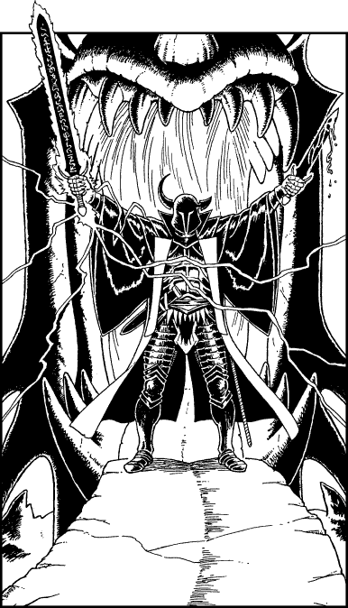

200
Before the dragon-gate stands an armoured colossus. Clad from horned helm to booted foot in glowing black plate armour, this mighty warrior stands a full arm’s length taller than yourself and radiates an evil so intense that you feel your skin crawling with fear and revulsion. In his right hand he wields a broadsword carved with runes of power, and in his left a dagger that bleeds scarlet venom. He raises the sword and spears of blue lightning arc from the surrounding chasm wall to earth themselves upon the hilt of his unholy blade. You launch a psychic probe to test the mental defences of this god-like warrior and you are shocked when you fail to locate his Mindforce. You sense that this being is a living entity, and that he is the source of the power that has drawn you to this chasm, yet it is as if his mind has been erased. He has the psyche of an automaton: cold, brutal, and utterly unhuman. His mental state presents a formidable defence against your powerful psychic abilities, rendering them near-useless. Yet where your psychic skills may fail, your agility and your mastery of conventional combat may prove especially effective against this hulking foe.

If you possess a Bow and wish to use it, turn to 336.
If you do not possess a Bow or choose not to use it, turn to 26.